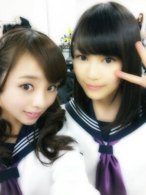
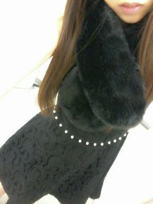

| 2013/01 07 Mon | 川村真洋 握手会&選抜発表 写 メ５枚はったよ。わお(*^^*) |
ろってぃ-blogです(*^^*)
この 土,日は
幕張メッセにて
全国握手会
個別握手会と
握手会が２日間ありました
=・ω・=
全握では
えりかとペアでしたよん )))
わぁ-ぉ。☆

ツインテールの巻髪で
参戦しましたよん。
(・ω・)♪Ya-
ミニライブの方は
ストレートヘアーで
参戦しましたでぃ。
(・ゞ・)うりゃ♪
Rotty夢 & えりかfamの皆様
ありがとうございました(*^^*)
初めましての方が
たくさんいたー☆
めちゃ嬉しかったー♪るん
すんごく 、
楽しい時間を
本当にありがとうございました
(〃ω〃)
えりかもありがとーう(・∀・))/
まひろねっ
オデコ出したえりか
めちゃ好きやねん〜(´∀`)
キューピーちゃんみたいで
めちゃかわいい(〃ゞ〃)
そして
今日は個握だったよん♪
もちろん個握は
今回も私服だったよん(*^^*)
前回は クリスマスで
サンタさんの格好だったので
今回は イメージをがらっと
かえてみました^^
黒のレースかかった
ワンピ♪

たまにはこんなのも
着たくなるよね〃ω〃てへ。
そしてね、
電車に乗ってから
きずいちゃったんだけど...
本当は 赤の靴を
はいてくるはずやったの
(><｀)
黒と赤を間違えるとはな
自分・・・。
まっ そんな時もあるさ・∀・)/
って言ってたら
ポジティブ過ぎると
怒られたよん 笑
そして、今さっき
『乃木坂ってどこ?』で
5枚目の選抜発表が
オンエアされました(´｀)
まひろ,
選抜に選ばれませんでした。
「嬉しいキモチになれません。」
今日 握手会でも皆様から
今日のオンエア
楽しみにしてるね ^^)/
今日は正座して見るね☆
選抜発表ドキドキするよ♪
って言ってくれてたのに
皆の期待には
こたえることが
できてなかったの。
ごめんなさい。
まひろの
今年,これからの目標は
自分の夢へと
少しずつ少しずつ前へ
着実に近づいていくこと ! !
そして
ろってぃ-パワー全開で
頑張ることっ☆!!
自分に負けたない 。
皆さん...
まひろのこと見捨てないで
ほしいです(´ `)
まひろには
まだまだアイドルとして
できてないところ
たっくさんある。
もっと自分アピール
しいよ!! って
ずっと言われてるのに
自信がなくてできてない...
それでもfamになってくれて
いつも応援してくれている
皆様がいる。
感謝しています。
本当に大好きです。
今まで このこと
言ったことなかったけれど
正直に言います...´ - `
歌が得意
ダンスが得意 ＝ 強い女。
って思われちゃうことが
辛い。
見た目とか ダンスだけを見て
ろってぃ-は
気の強い女だ。って
思われるのが
本当に悔しいです。
だから 応援しなくても
別にろってぃ-は
やっていけるだろう。と
思われるのが
本当に 辛かった。
まひろは 小さい頃からずっと
周りの友達に何か言われても
何も言い返せなくて
言われっぱなしで
ケンカもできなくて
そんな自分が嫌で
なおしたいと
ずっと思ってました´ `
でも 今になっても
ライブの時とかでも
皆様がくれる
ろってぃ-コールが
なかったり
いつも聞こえる声が
なかったりするだけで
またすぐに自信を
なくしちゃって
皆に嫌われてるのかなぁ´ _ `
とか考えてしまって
しゃべれなくなっちゃったりします...
本当にこんな自分を
変えたい変えたいって
思う。
今年からは
ほぼ毎日ろってぃ-パワー全開で
頑張りますっ! ! !
よろしくお願いします*^^*
ろってぃより。